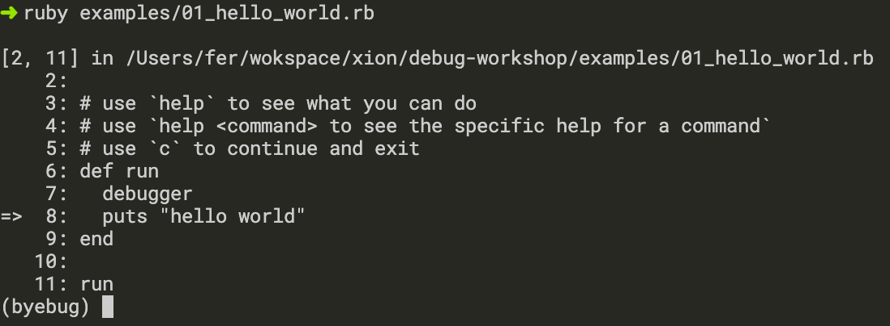

puts
Rails.logger
Pry
Byebug
Byebug
Main features
Step through the different code parts
Set breakpoints with conditionals
View the status of the application in the different stack levels
How to use it?
put a debugger somewhere in your code

Commands
break -- Sets breakpoints in the source code catch -- Handles exception catchpoints condition -- Sets conditions on breakpoints continue -- Runs until program ends, hits a breakpoint or reaches a line debug -- Spawns a subdebugger delete -- Deletes breakpoints disable -- Disables breakpoints or displays display -- Evaluates expressions every time the debugger stops down -- Moves to a lower frame in the stack trace edit -- Edits source files enable -- Enables breakpoints or displays finish -- Runs the program until frame returns frame -- Moves to a frame in the call stack help -- Helps you using byebug history -- Shows byebug's history of commands info -- Shows several informations about the program being debugged interrupt -- Interrupts the program irb -- Starts an IRB session kill -- Sends a signal to the current process list -- Lists lines of source code method -- Shows methods of an object, class or module next -- Runs one or more lines of code pry -- Starts a Pry session quit -- Exits byebug restart -- Restarts the debugged program save -- Saves current byebug session to a file set -- Modifies byebug settings show -- Shows byebug settings skip -- Runs until the next breakpoint as long as it is different from the current one source -- Restores a previously saved byebug session step -- Steps into blocks or methods one or more times thread -- Commands to manipulate threads tracevar -- Enables tracing of a global variable undisplay -- Stops displaying all or some expressions when program stops untracevar -- Stops tracing a global variable up -- Moves to a higher frame in the stack trace var -- Shows variables and its values where -- Displays the backtrace
What we will see
break -- Sets breakpoints in the source code catch -- Handles exception catchpoints condition -- Sets conditions on breakpoints continue -- Runs until program ends, hits a breakpoint or reaches a line delete -- Deletes breakpoints display -- Evaluates expressions every time the debugger stops frame -- Moves to a frame in the call stack help -- Helps you using byebug info -- Shows several informations about the program being debugged list -- Lists lines of source code next -- Runs one or more lines of code step -- Steps into blocks or methods one or more times undisplay -- Stops displaying all or some expressions when program stops var -- Shows variables and its values where -- Displays the backtrace
help
help <command>
displays the help
continue
Runs until program ends, hits a breakpoint or reaches a line
display
Evaluates expressions every time the debugger stops
very useful when debugging loops
usage:
display <expression>
display
undisplay
Stops displaying all or some expressions when program stops
usage: undisplay <expression number>
break
Sets breakpoints in the source code
usage:
break [<file>:]<line> [if <expr>]
break [<module>::...]<class>(.|#)<method> [if <expr>]
break
condition
Sets conditions on breakpoints
usage:
condition [<cond number>] [expr]
info
Shows several informations about the program being debugged
usage:
info breakpoints
info display
info file
info line
info program
delete
Deletes breakpoints
Without and argument, deletes all breakpoints.
With integer arguments, it deletes specific breakpoints.
usage:
info breakpoints
info display
info file
info line
info program
where
Displays the backtrace
usage: where
frame
Moves to a frame in the call stack
usage: frame <frame number>
list
Lists lines of source code
usage:
list- (show previous code)
list (show code after)
list= (back to execution point)
list x-y (show lines from x to y)

eval
Undocumented. Evaluates variables that otherwise trigger debugger commands
usage: eval <expression>
next
Runs one or more lines of code
usage: next [<number of lines>]
step
Steps into blocks or methods one or more times
usage: next [<times>]
catch
Handles exception catchpoints
usage:
catch lists catchpoints
catch off deletes all catchpoints
catch <exception> enables handling exception
catch <exception> off disables handling exception
Thank you
Questions?